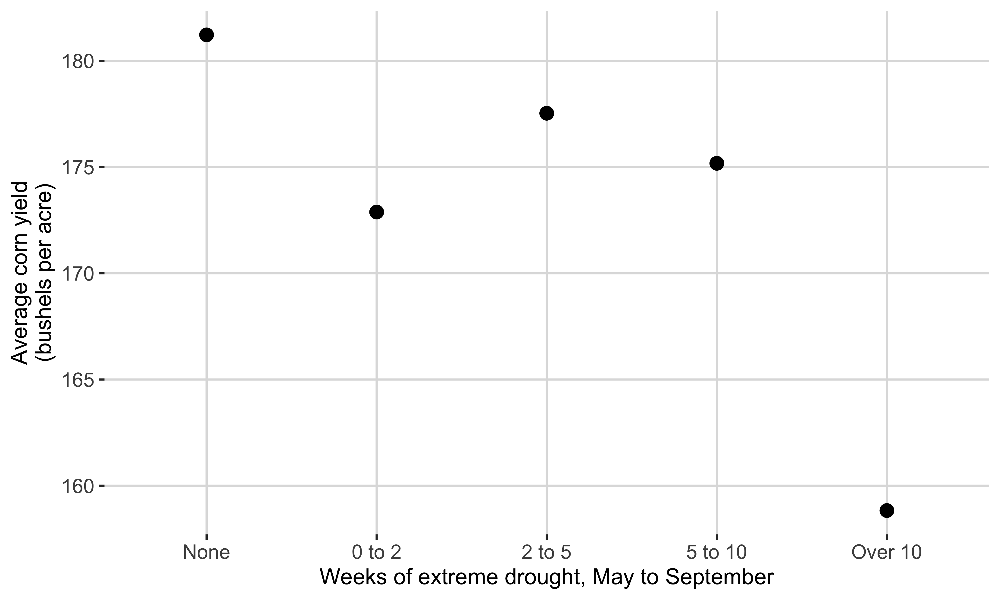
An AI assistant can draw any figure in seconds. It knows every function and every option. What it cannot know is:
Those four are your job. So today is about:
tidyverse package if you have not already. It includes ggplot2, the package that draws every figure in this course.county_yield.csv, which you can download from the page of exercise 4-1. One row is one county in one year: corn yield and weeks of drought for 154 counties in Colorado, Kansas and Nebraska, 2000 to 2018.Before you ask for any figure, write down two things:
How to tell it is done: someone who sees only the figure, without your text, can say your sentence back to you.
The same table supports many sentences. Asked for “a figure of this data”, the AI has to choose a message without knowing yours, and it usually picks the figure that suits the types of the columns, not the point you want to make.
Every design decision in this lecture (type of figure, colour, order, axis range, title) is judged against your sentence. Without the sentence, there is nothing to judge against.
Both figures are drawn from the same 1,956 rows. Each serves a different sentence.
The kind of sentence you wrote tells you the kind of figure to start from. The last column is the part of the code that names the figure type, so you can recognise it in what the AI writes.
| Kind of message | A sentence from this data | A figure that suits it | In the code |
|---|---|---|---|
| A distribution | “Half of all county-years yielded between 164 and 195 bushels per acre.” | histogram | geom_histogram() |
| A relationship between two variables | “Yields fall as drought lasts longer.” | points, or averages per range | geom_point() |
| A comparison across groups | “Nebraska counties typically yield more than Kansas or Colorado counties.” | box plots, points, bars | geom_boxplot(), geom_col() |
| A change over time | “Extreme drought came in 2012 and 2013.” | line | geom_line() |
| A part of a whole | “Nebraska makes up 65% of the county-years.” | one bar split into parts | geom_col() |
The next two slides take a comparison and a relationship and show how much the choice matters.
“Half of all county-years yielded between 164 and 195 bushels per acre.”
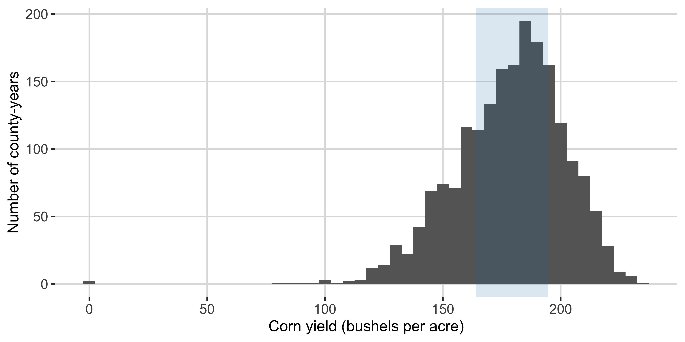
The shaded band is the middle half. The handful of yields near zero are real rows; the exercise asks what they are.
“Nebraska makes up 65% of the county-years.”
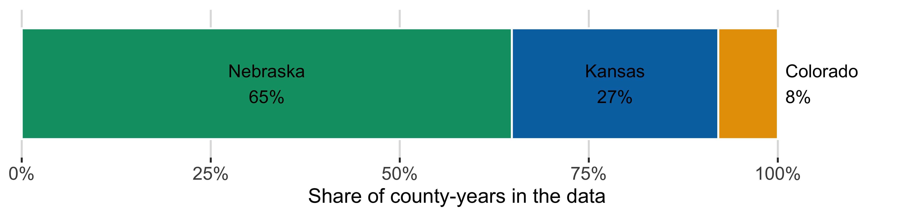
Message: “Nebraska counties typically yield more corn than Kansas or Colorado counties.”
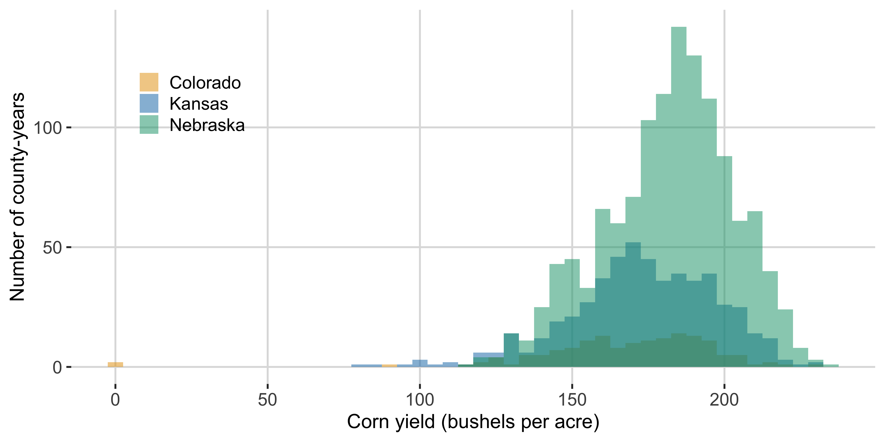
Nebraska has the most rows, so its histogram covers the other two. The reader sees “Nebraska is big”, which is a fact about the data, not about yields.
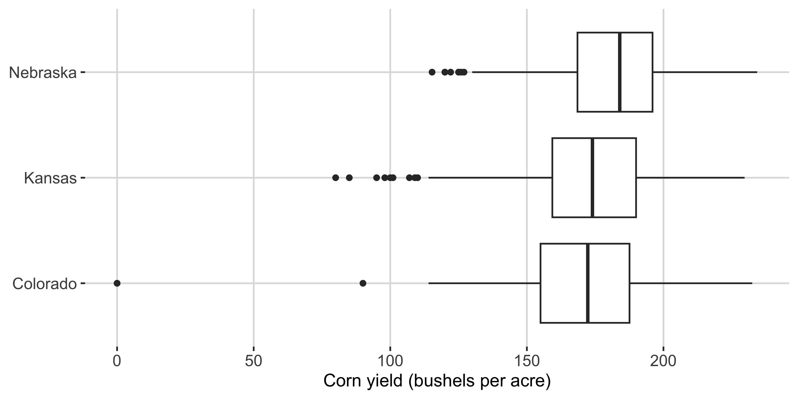
The thick line in each box is the median (half the counties yield more, half less), and the box holds the middle half. Nebraska’s median is 184, against 174 for Kansas and 172 for Colorado, and the boxes show how much the states overlap.
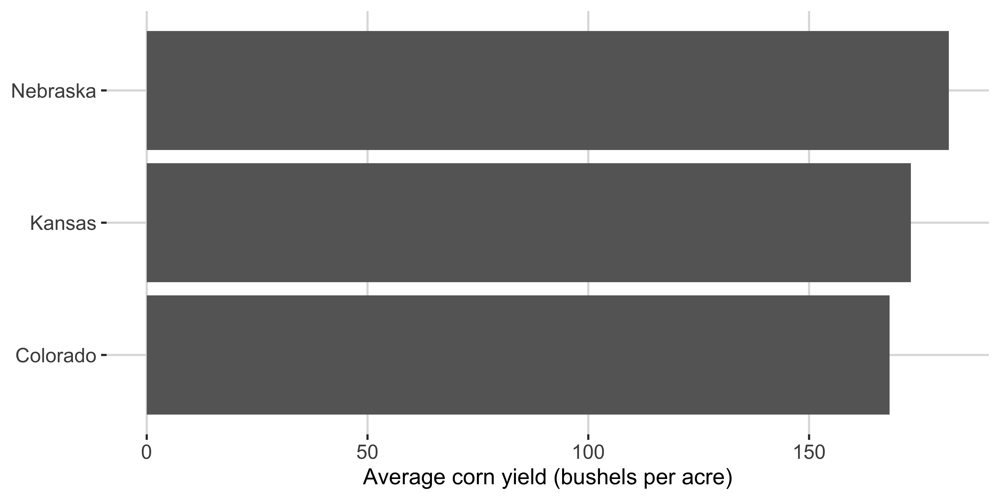
The bars are correct, but they make the states look alike: Nebraska’s average (182) is only 8% above Colorado’s (168), so the difference is a sliver at the end of a long bar.
B serves this message. “Typically” is a statement about the middle of each state’s yields, and box plots put the middle and the spread side by side.
For another message, say “Colorado has the most variable yields”, B still works, while C would not show it at all.
Message: “Yields fall when drought lasts longer.”
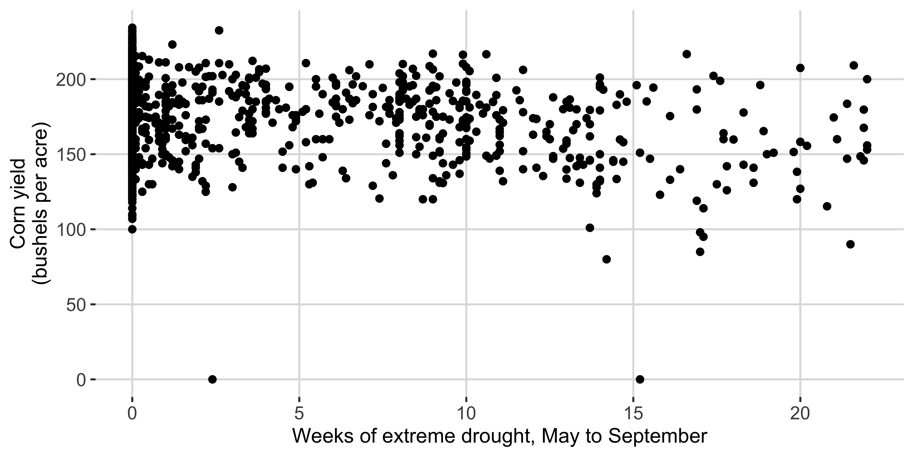
73% of the county-years had no extreme drought, so most points sit on top of each other in one column at zero. The fall is there, but the eye cannot find it.
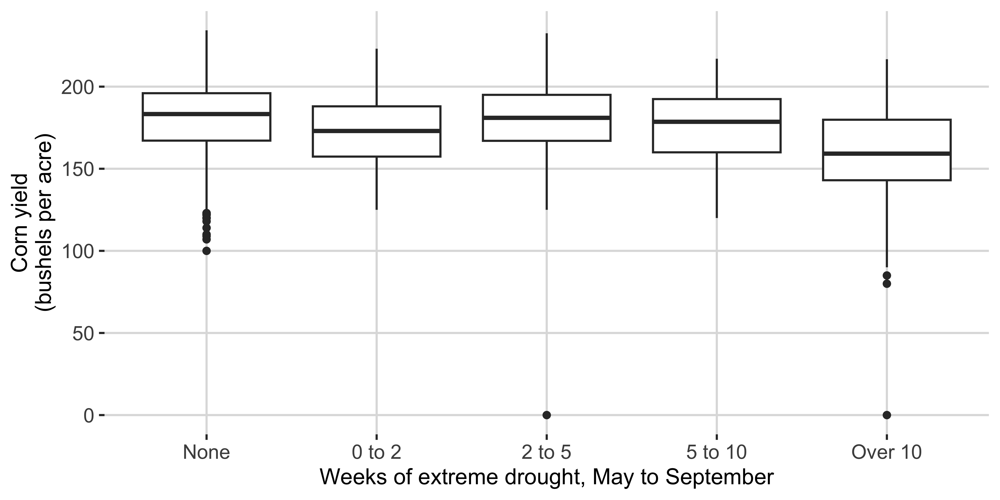
Grouping the drought weeks into ranges shows the drop at once. It also shows that the fall is not steady: the “2 to 5” group does better than the “0 to 2” group. Your sentence should not claim more than the figure shows; “yields are lowest after more than 10 weeks of drought” is what this figure supports.
Use colour only for a variable the reader needs and that the position of the marks does not already show. How to tell: remove the colour in your head. If the reader loses nothing, the colour is decoration, and decoration makes the reader look for a meaning that is not there.
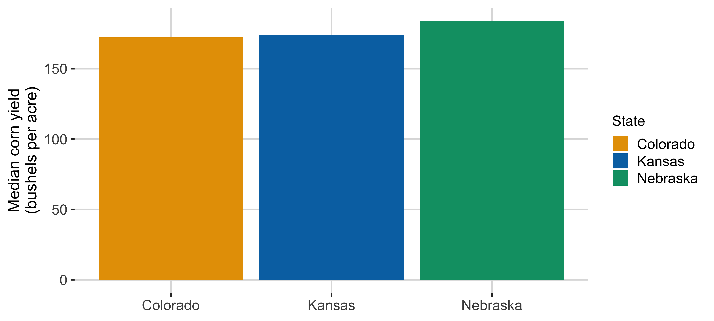
Each state already has its own place on the horizontal axis. The colours and the legend repeat the axis labels.
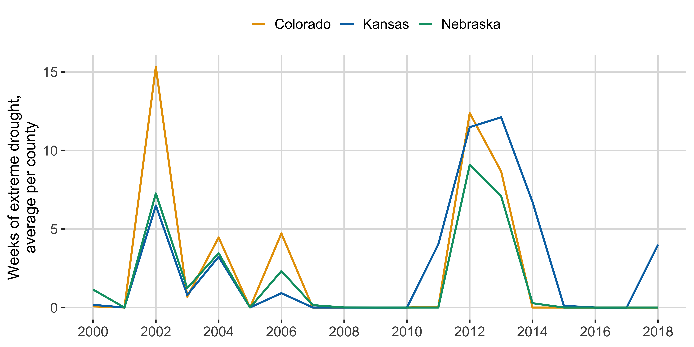
Three lines share one pair of axes. Colour is the only thing that says which line is which state.
Groups with no order (states, crops) get clearly different hues, as in the line figure on the previous slide. Use as few as the message needs.
Amounts (weeks of drought, yield) get one hue, from light for small to dark for large, so “darker means more” reads without a legend.
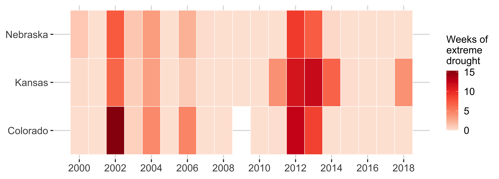
A value above or below a meaningful middle (a change, a difference from normal) gets two hues that grow darker away from a neutral middle. Here, each county’s yield minus its own 2000 to 2018 average, averaged over the counties of each state:
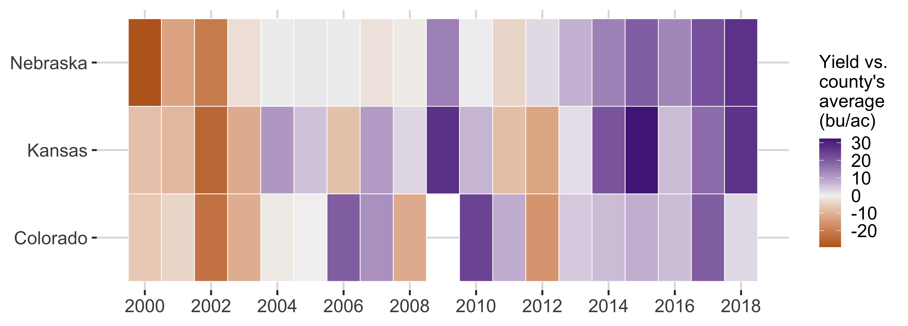
Orange is below normal, purple above, and pale means close to normal. The neutral middle must sit at the value that means “no difference”, here zero.
Message: “Colorado’s 2002 drought lasted about twice as long as Kansas’s or Nebraska’s.”
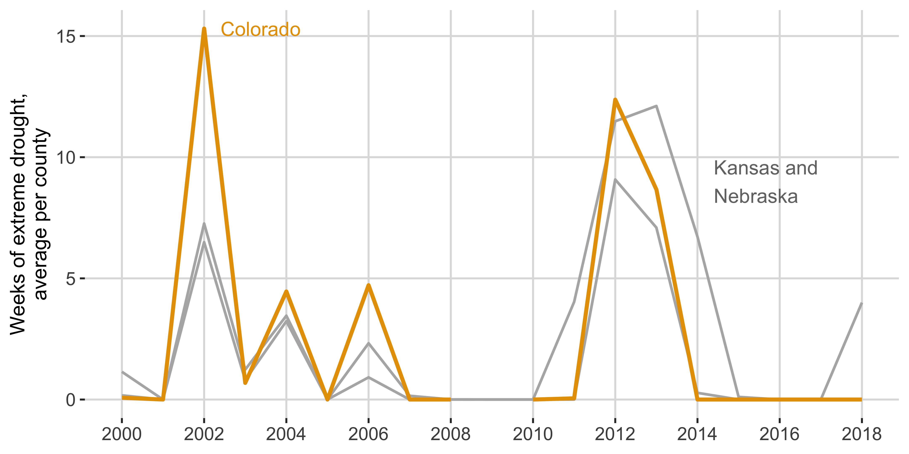
In 2002: Colorado 15.3 weeks, Kansas 6.5, Nebraska 7.3. The other states stay in the figure, in grey, because the message is a comparison with them.
Every figure on this deck draws Colorado in orange, Kansas in blue and Nebraska in green, including the highlight, where Colorado keeps its orange. A reader who learns the colours on one figure can read the next one without the legend.
Left to its defaults, ggplot hands out colours to whichever groups are in each figure, in alphabetical order. A figure without Colorado gives Kansas the colour Colorado had in the figure before. Name the colours in your request: “Colorado #E69F00, Kansas #0072B2, Nebraska #009E73 in every figure”.
A deliberately bad example. ggplot’s default colours for three groups put a red and a green of about the same lightness next to each other:
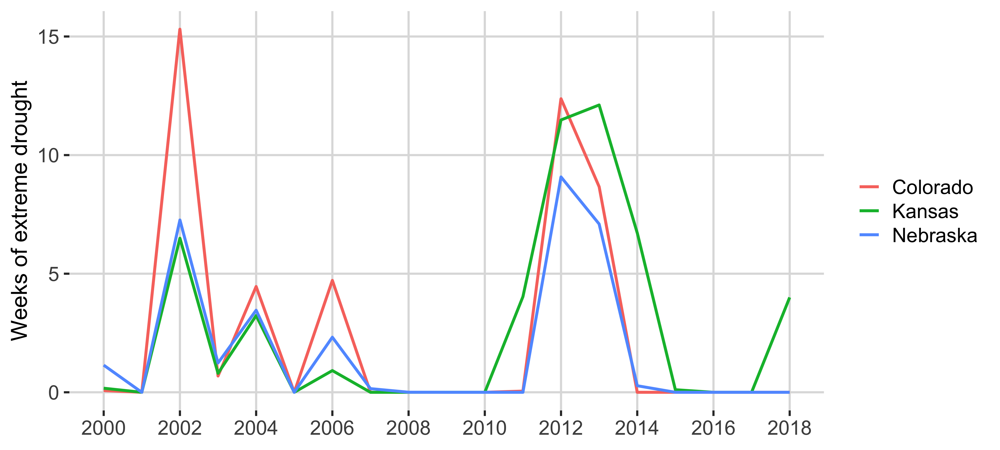
Roughly 1 man in 12 of European ancestry has some form of red-green colour blindness. The same figure, with its colours converted to what such a reader sees (simulated with the colorspace package):
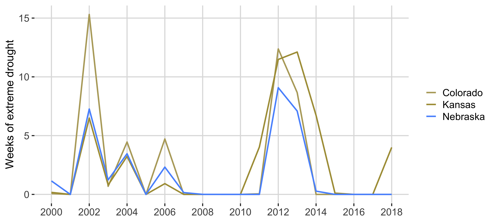
Colorado and Kansas now look nearly the same.
The Okabe-Ito palette is a set of eight colours chosen to stay distinct for colour-blind readers. The colours used for the states on this deck come from it:
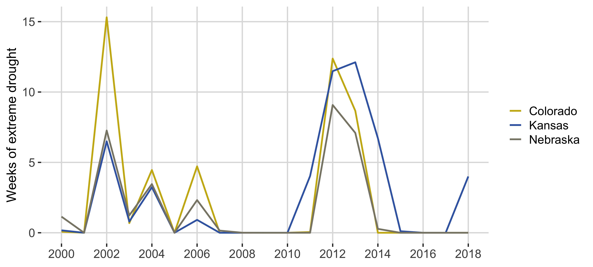
A reader has to match each colour to the legend, and that gets unreliable well before a palette runs out. With more groups than you can give clearly different colours:
Check: would the message survive printing in black and white? If colour is the only thing separating two lines, label them directly too.
The 12 counties with data in every year, all in Nebraska. Message: “Buffalo had the highest average yield.”
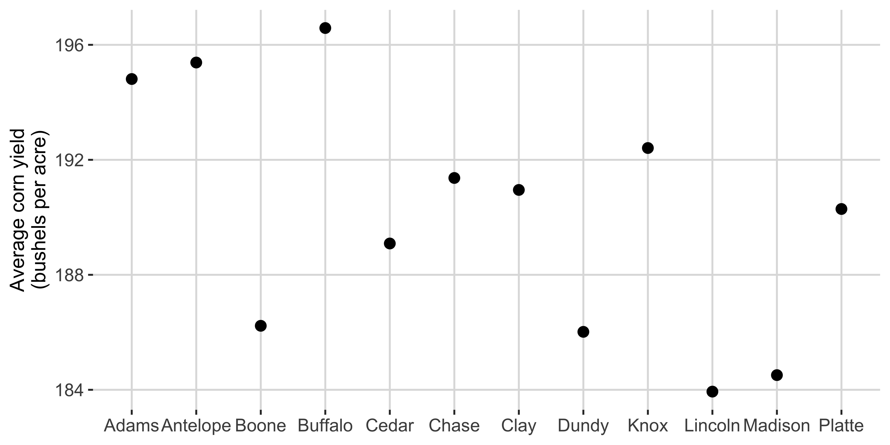
The names crowd together until they almost touch, and finding the highest county means comparing every point with every other.
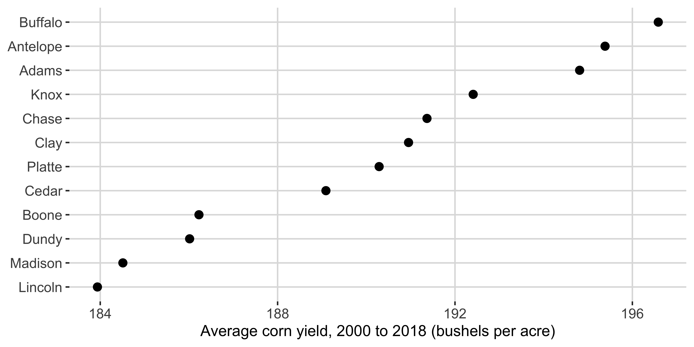
Ordered by value, the ranking is the figure. With the names on the vertical axis they read horizontally and never overlap. Rotating the names by 45 or 90 degrees would also stop the overlap, but makes them harder to read.
Keep the natural order when the categories have one: years, months, drought ranges from none to most.
Message: “Nebraska’s yields sit higher than the other two states’.”
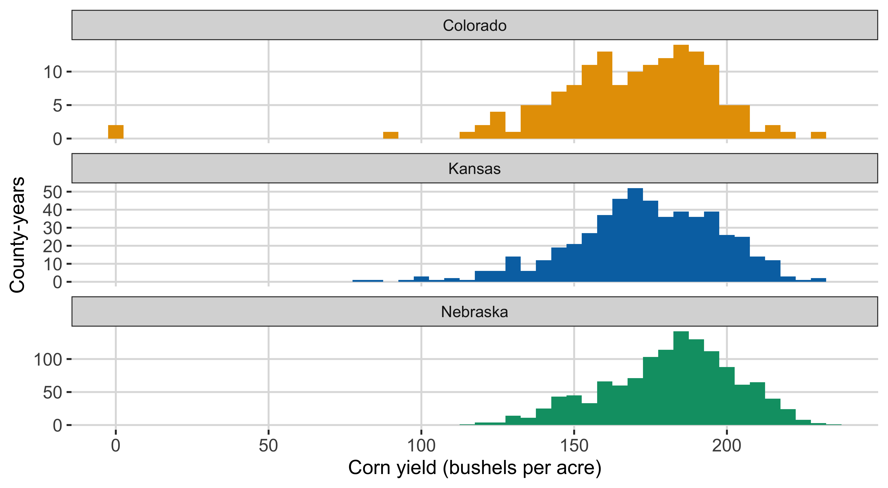
The overlapping histograms from “One message, three figures”, split into one panel per state. Stacked one above the other on the same horizontal axis, the shift of Nebraska’s yields to the right is visible.
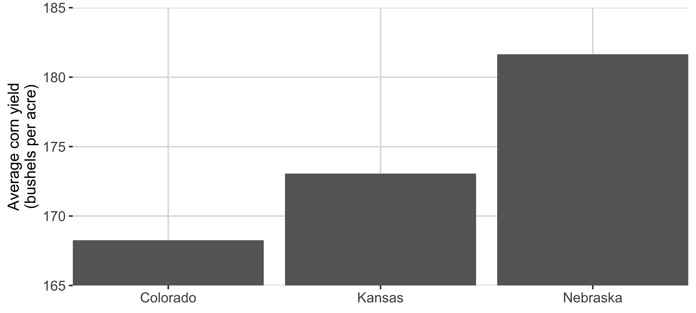
A deliberately bad example. A bar’s length is read as its value. With the axis starting at 165, Nebraska’s bar is 5 times as tall as Colorado’s, although its average is only 8% higher.
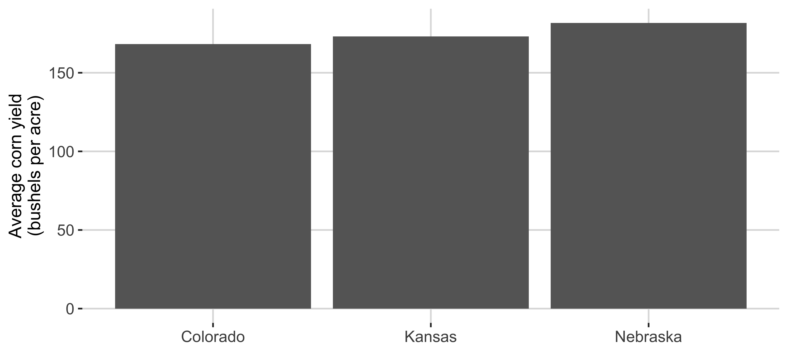
Honest, and it shows the differences are small. If the message is about those small differences, bars are the wrong choice; use points, which need no zero.
For points and lines the reader reads position, not length, so the axis should cover the range where the variation that matters lies. The dot plot of county averages on the “Order categories by value” slide runs from about 183 to 197. Forced to start at zero, all 12 points would crowd into the right 7% of the panel’s width and the ranking would be hard to see.
The opposite mistake: an axis so narrow that a change too small to matter fills the whole figure. The range should match what the message calls large.
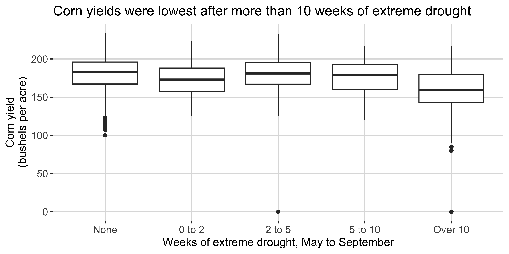
A title such as “corn_yield by drought band” names the variables, which the axes already do. A title that states the finding tells the reader what to look for. In a report where the figure has a caption, the caption can carry the finding instead.
A legend makes the reader look away from the data, find the colour, read the name, and look back, once for every line. A label at the end of each line removes that trip. The “Highlight” figure in the colour section labels its lines directly; the before-and-after slide below does the same for three lines.
When there is only one group, there is nothing for a legend to explain. Remove it.
Look at each element and ask whether the message would suffer without it:
What remains should be the data, the axes, and the words needed to read them.
Every figure you hand in must meet this standard, whatever its message. Each item has a yes or no answer.
corn_yield. Category labels in words: “Irrigated”, not 1.The copyable version, to add to every figure request, is in Recommended requests at the end of this deck.
Message: “Extreme drought hit all three states in 2002, and again in 2012 and 2013.”
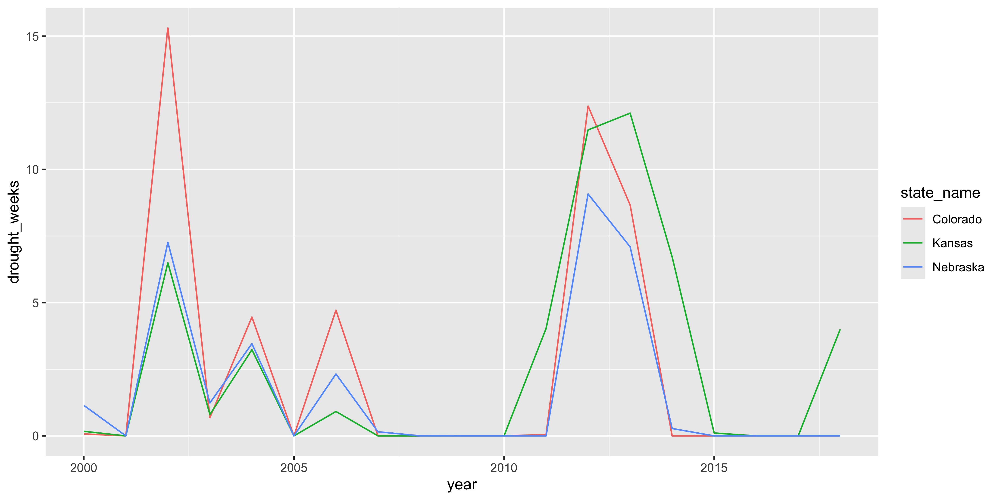
A deliberately bad example: ggplot’s defaults, which is what comes back when a request says nothing about how the figure should look.
last_points <- filter(state_year, year == max(year))
ggplot(state_year, aes(year, drought_weeks, colour = state_name)) +
geom_line(linewidth = 1) +
ggrepel::geom_text_repel(
data = last_points, aes(label = state_name),
direction = "y", hjust = 0, nudge_x = 0.4, size = 5.5, seed = 1
) +
scale_colour_manual(values = state_colours, guide = "none") +
scale_x_continuous(
breaks = seq(2000, 2018, 2),
expand = expansion(mult = c(0.02, 0.12))
) +
labs(
title = "Extreme drought hit all three states in 2002, and again in 2012 and 2013",
x = NULL,
y = "Weeks of extreme drought,\nMay to September"
)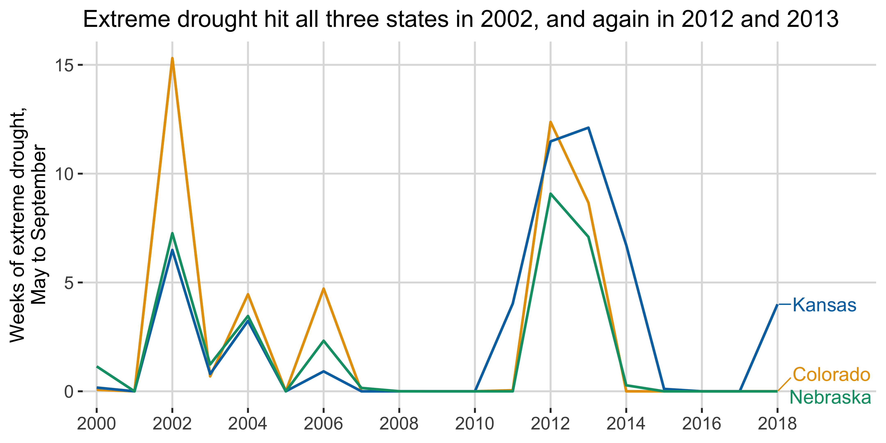
| Standard item | Before | After | |
|---|---|---|---|
| 1 | Plain-word labels | drought_weeks, year, state_name |
“Weeks of extreme drought, May to September”; no axis title for years, which need none |
| 2 | Readable text | far smaller than this slide’s text | the same size as this slide’s text |
| 3 | Legend | a legend to the right, which narrows the plot | removed; each line is labelled at its end |
| 6 | The data is darkest | grey background, white gridlines | no background, light gridlines |
| 7 | Shape | wide | wide, which suits a change over time |
| 8 | Colours | ggplot’s red, green and blue | the deck’s Okabe-Ito colours for each state |
The title now states the finding. Items 4 and 5 needed no change here.
None of these failures gives an error. The figure is drawn, and it is wrong.
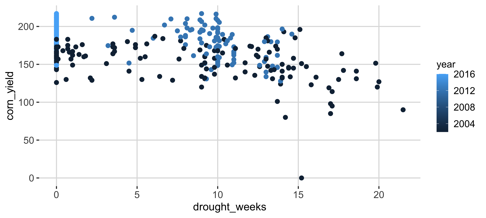
The request was “colour the points by year” for three years. year is stored as a number, so ggplot drew a scale for an amount: a legend with shades for years that are not in the figure, and three shades of one blue that are hard to tell apart.
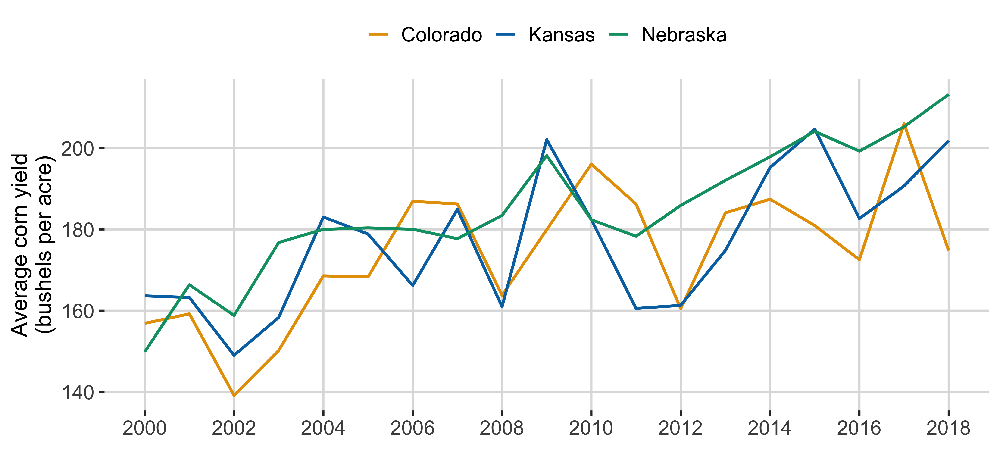
The data has no Colorado row for 2009. The orange line runs straight from 2008 to 2010 and nothing on the figure says a year is missing.
Ask the AI to print, next to the figure in the HTML, the table the figure is drawn from, with the number of original rows behind each value. Here, the rows around 2009:
# A tibble: 8 × 5
state_name year corn_yield drought_weeks counties
<chr> <dbl> <dbl> <dbl> <int>
1 Colorado 2008 164. 0 5
2 Kansas 2008 161 0 2
3 Nebraska 2008 184. 0 63
4 Kansas 2009 202. 0 18
5 Nebraska 2009 198. 0 67
6 Colorado 2010 196. 0 10
7 Kansas 2010 182. 0 26
8 Nebraska 2010 182. 0 73Two problems show at once. Colorado has no 2009 row. And Kansas’s 2008 average comes from 2 counties, against 26 in 2010: a point on that line can rest on very few counties. Neither is visible in the figure.
Apply it to any figure, yours or the AI’s, by looking at it in the rendered HTML, at the size a reader will see it. Each question has a yes or no answer.
A “no” to any question is something to fix or a reason to choose a different design.
The message is meant to be: “Extreme drought came in a few bad years, above all 2012 and 2013.”
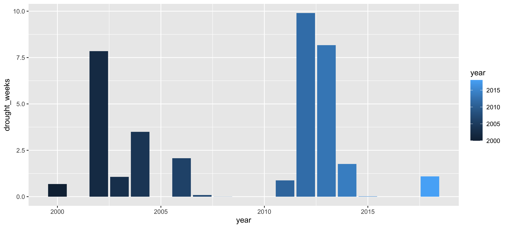
A. Apply questions 1 to 5 of the checklist. Which answers are “no”?
B. What does the colour show that the position of the bars does not?
C. List the changes you would ask for, in the order that matters most for the message.
A. Question 1 is close to “yes”: the tall bars are visible. Question 2 is “no”, question 4 is “no” (the colour and its legend), and question 5 is “no”: raw column names as axis titles, text far smaller than the slide’s, a grey background.
B. Nothing. The colour repeats the year, which the horizontal axis already shows, and its legend narrows the plot.
C. Remove the colour and the legend; put the finding in the title; plain-word axis title with units (“Weeks of extreme drought, May to September”); larger text; no grey background. Bars are a reasonable choice here, since the values are counts of weeks and start at zero; a line would also do.
Figures follow the same way of working as everything else (lecture 03-1, “Working with AI on your own research”): you ask, the AI writes into a Quarto document, you render, and you judge the HTML.
For figures, judging the HTML matters even more:
Every figure request ends with the figure standard and then the closing instructions. Both are under Recommended requests.
The AI already knows how to draw any figure. Your request supplies what it cannot know:
Using an agent in your editor or terminal?
An agent such as Claude Code can open the data and look for itself. It still cannot know your message or your reader. Write those down before it runs.
The AI has to guess which columns, which message, which reader and which type of figure. Whatever it draws is a figure of the data, not of a message, and you have no sentence to judge it against.
In my R project, data/county_yield.csv has one row per county and year,
2000 to 2018, for Colorado, Kansas and Nebraska. drought_weeks is the
number of weeks from May to September the county spent in extreme
drought.
The message: extreme drought hit all three states in 2002, and again in
2012 and 2013. The reader: an extension audience who knows the states
but has not seen this data.
Average drought_weeks by state and year, and draw one line per state
over time. Colorado #E69F00, Kansas #0072B2, Nebraska #009E73. Print
the table the figure is drawn from, with the number of counties behind
each value.followed by the figure standard and the closing instructions.
A version of what an AI returns, the code behind the “After” figure. You should be able to say which part does what:
last_points <- filter(state_year, year == max(year))
ggplot(state_year, aes(year, drought_weeks, colour = state_name)) +
geom_line(linewidth = 1) +
ggrepel::geom_text_repel(
data = last_points, aes(label = state_name),
direction = "y", hjust = 0, nudge_x = 0.4, size = 5.5, seed = 1
) +
scale_colour_manual(values = state_colours, guide = "none") +
scale_x_continuous(
breaks = seq(2000, 2018, 2),
expand = expansion(mult = c(0.02, 0.12))
) +
labs(
title = "Extreme drought hit all three states in 2002, and again in 2012 and 2013",
x = NULL,
y = "Weeks of extreme drought,\nMay to September"
)ggplot(...) with aes(...): which column goes on which axis, and which column sets the colourgeom_line(): draw lines; geom_text_repel(): the labels at the line endsscale_colour_manual(): the fixed colours, and guide = "none" removes the legendlabs(): the title and the axis titlesCopy one, then replace every <...> with what you know: the message, the reader, the group that matters, what you found in the data. Every figure request ends with the figure standard and then the closing instructions.
The lines that end every request:
Put the code in my Quarto document <analysis/ex-3-1.qmd>, under the
heading "<Task 2>", as R code chunks. Above each chunk, write one
plain-English sentence saying what it does and why. Build every path
with here::here(); no setwd(), no absolute paths. Print each check as
"<check>: expected <X>, got <Y>". Render the document to HTML.A chat assistant cannot render: paste its chunks into your .qmd and render it yourself. An agent in your editor or terminal can do every step.
Paste this into every figure request, just before the closing instructions:
Every figure must meet this standard:
1. Axis titles, legend titles and category labels in plain words with
units, such as "Corn yield (bushels per acre)", never a column name;
categories in words, such as "Irrigated", never a code such as 1.
2. Tick labels, axis titles and legend text no smaller than the
document's body text, at the size the figure appears in the HTML.
3. No legend when lines or points can be labelled directly or there is
only one group. Otherwise, the legend inside an empty corner of the
plot, or above or below a wide figure, in the same order as the lines
or bars it describes.
4. Numbers formatted for reading: thousands separators, no more decimals
than the message needs, percentages shown as percentages.
5. No overlapping tick labels; for long category names, put the
categories on the vertical axis rather than rotating the text.
6. Light or no gridlines and no heavy borders, so the data is the
darkest thing in the figure.
7. A shape that suits the content: wide for a change over time, close
to square for a relationship between two variables.
8. Colours readable by colour-blind readers (such as the Okabe-Ito
palette), and no more colours than the message needs.Keep your own copy of this block, and add to it each time you find something the AI keeps getting wrong.
The central request: the AI makes alternatives cheaply, and choosing among them is your job.
In my R project, <data/county_yield.csv> has one row per <county and
year>. The figure uses the columns <...>, which mean <...> and are
measured in <units>.
The message: <the one sentence the reader should take away>.
The reader: <who will see it, and what they already know>.
The group the message is about: <...>.
Draw <three> different designs of a figure for this message, one after
another. Under each, write one sentence saying what that design makes
easy to see and what it hides. Do not choose one for me.
<the figure standard>
Put the code in my Quarto document <analysis/ex-4-1.qmd>, under the
heading "<Task 3>", as R code chunks. Above each chunk, write one
plain-English sentence saying what it does and why. Build every path
with here::here(); no setwd(), no absolute paths. Print each check as
"<check>: expected <X>, got <Y>". Render the document to HTML.Then choose one, and write in your document which one and why, in terms of the message.
The code below draws a figure. Its message should be: <one sentence>.
The reader is <who>. The group the message is about is <...>; the
others are context.
Change the figure so that the message is the first thing a reader
sees. Keep the original figure, and put the new one below it. Above the
new one, list each change and why, in plain English.
<the figure standard>
Put the code in my Quarto document <analysis/ex-4-1.qmd>, under the
heading "<Task 5>", as R code chunks. Above each chunk, write one
plain-English sentence saying what it does and why. Build every path
with here::here(); no setwd(), no absolute paths. Print each check as
"<check>: expected <X>, got <Y>". Render the document to HTML.
<paste the code here>The code below draws a figure. Its intended message is: <one sentence>.
The reader is <who>.
Draw it unchanged. Below it, answer each question with yes or no and
one sentence of reason:
1. Could someone who has not seen the data state the message within a
few seconds?
2. Does every colour carry information?
3. Would the message survive printing in black and white?
4. Is everything in the figure needed for the message?
5. Does it meet each item of the figure standard below? Answer per item.
<the figure standard>
Put the code in my Quarto document <analysis/ex-4-1.qmd>, under the
heading "<Task 5>", as R code chunks. Above each chunk, write one
plain-English sentence saying what it does and why. Build every path
with here::here(); no setwd(), no absolute paths. Print each check as
"<check>: expected <X>, got <Y>". Render the document to HTML.
<paste the code here>Compare its answers with your own before you change anything.
Draw my figure from <Task 4> again, and next to it print the table
the figure is drawn from: one row per <point / bar / point on a line>, with
the columns that set its position and colour, and the number of rows of
the original data behind each one.
Then check:
- the number of <points / bars / lines>: expected <...>
- the column used for colour holds <categories / amounts>, and is
stored as such
- <a gap or a small group you know of>: <...>
Put the code in my Quarto document <analysis/ex-4-1.qmd>, under the
heading "<Task 7>", as R code chunks. Above each chunk, write one
plain-English sentence saying what it does and why. Build every path
with here::here(); no setwd(), no absolute paths. Print each check as
"<check>: expected <X>, got <Y>". Render the document to HTML.For figure code you did not write, or are not sure about:
Explain this ggplot2 code to me. For each line, write one plain-English
sentence. Then list:
1. which column sets the horizontal axis, the vertical axis, and the
colour, and whether each is stored as a number or as a category
2. any step that could make the figure misleading without an error,
and what printed check would reveal it
<paste the code here>| You need to decide or judge | The AI can write |
|---|---|
| The message, in one sentence, and who the reader is | The code for any type of figure |
| Which type of figure makes that message obvious, chosen from alternatives | Two or three alternatives, side by side |
| Whether colour carries information, and which group to highlight | The colour scales and the highlighting |
| The order, the panels, the axis ranges, the title that states the finding | The code for each of them |
| Whether the figure meets the figure standard | The labels, sizes and legend placement, when you append the standard |
| Whether the data behind the figure is right: one row per thing drawn, the right types, nothing hidden | The table printed next to the figure |
Every figure: write the message and the reader first. Ask for alternatives, choose one and write why. Append the figure standard and the closing instructions. Render, and judge the figure in the HTML with the checklist.